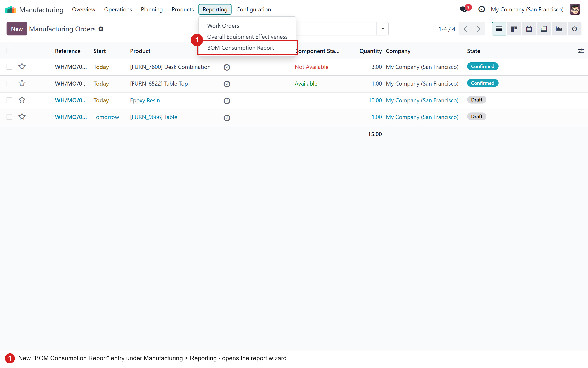
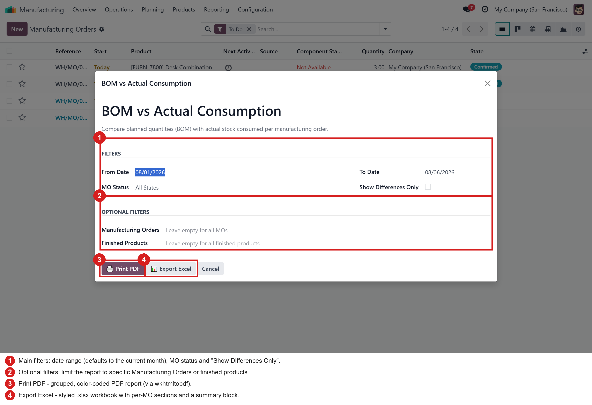
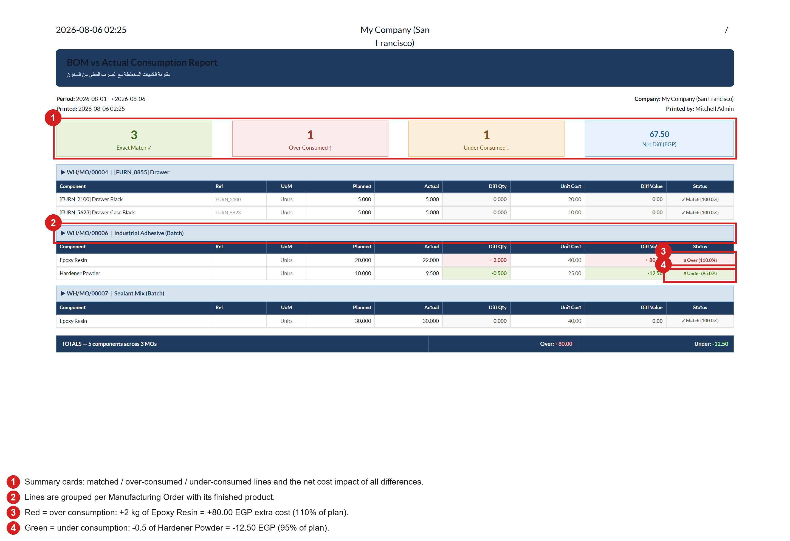
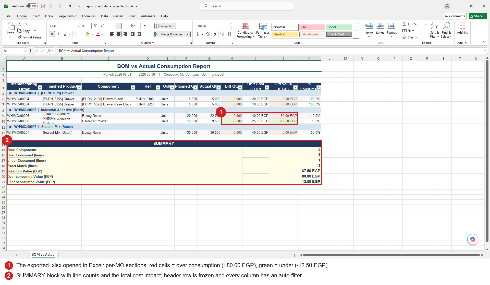

Compare the quantities your Bills of Materials planned with what production actually consumed from stock — per manufacturing order, per component, with the cost impact of every difference. Export as a color-coded PDF or a styled Excel workbook.
After installation a new BOM Consumption Report entry appears under Manufacturing > Reporting. It is available to every Manufacturing user.

Choose a date range (defaults to the current month), optionally narrow down by MO status, specific manufacturing orders or finished products — and tick Show Differences Only to hide every line that matched the plan exactly. Then print the PDF or export the Excel file.

Summary cards on top, then one section per manufacturing order. Every component line shows planned vs actual quantity, the difference, its cost value and a color-coded status with the consumption percentage — red for over-consumption, green for savings.

The same data lands in a professionally styled workbook: per-MO section headers, alternating row colors, conditional coloring on the difference columns, a frozen header row with auto-filters, and a summary block — ready to pivot, sort or send to management.

pip install openpyxl). Report data is snapshotted on the wizard at
print time, so the QWeb template needs no extra context.